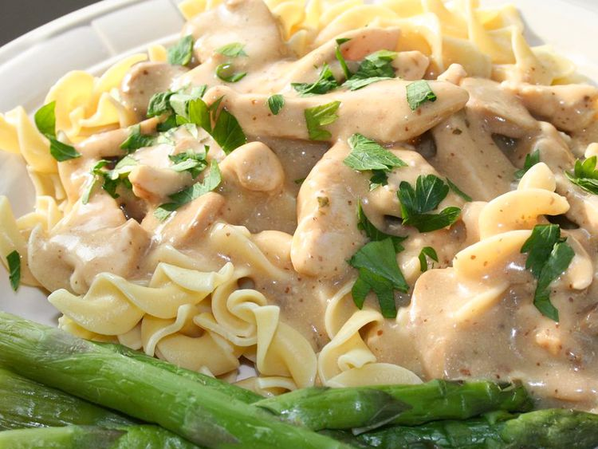

Chicken Stroganoff

Description
For this chicken stroganoff recipe, I wanted something like the traditional beef stroganoff and threw this one
together, writing down everything as I went so I wouldn't forget. I served it with noodles, but rice would be
great too. For a complete meal, make asparagus for a vegetable side and a green or fruit salad. Nutmeg seems to
be the secret ingredient of many stroganoff recipes.
Ingredients
- 2 cups all-purpose flour for coating
- salt and pepper to taste
- 4 skinless, boneless chicken breast halves
- 1 tablespoon butter
- 2 cups fresh sliced mushrooms
- 1 (10.5 ounce) can condensed cream of chicken soup
- 1 ¼ cups half-and-half cream
- 1 (1 ounce) package dry onion soup mix
- 2 tablespoons chopped fresh parsley
- 2 cloves garlic, minced
- 1 teaspoon browning sauce
- ¼ teaspoon ground nutmeg
- 1 cup sour cream
- ⅛ cup chopped green onion for topping (Optional)